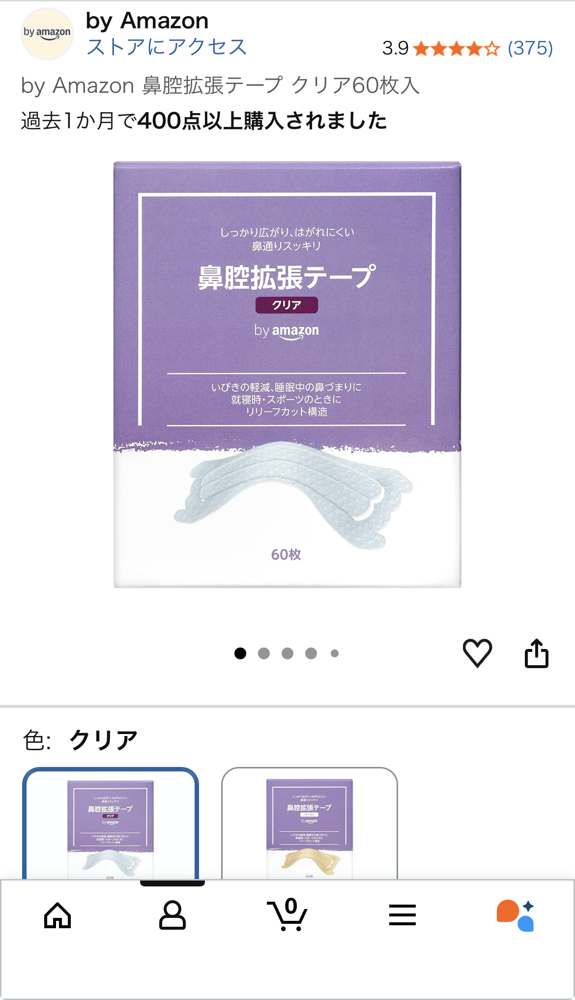

Amazon鼻腔拡張テープ クリア60枚入を実際に使って分かったメリット・注意点

「いくつか試しましたがコレが正解と思います。」という口コミどおり、 安くて品質に大きな問題がない鼻腔拡張テープを探しているなら、 Amazonの「鼻腔拡張テープ クリア60枚入」はかなり有力な選択肢です。
本記事では、実際の口コミ内容と一般的な鼻腔拡張テープの特徴をもとに、 メリット・デメリット・向いている人・失敗しない貼り方までまとめてレビューします。
- ドラッグストアで見かける有名品より価格が安く、コスパ重視ならかなり優秀
- 繊維質のザラザラした類似品と比べて、鼻が痒くなりにくいクリアタイプ
- 一度しっかり貼り付ければ、就寝中も十分な粘着力で剥がれにくい
- ただし貼り直しを繰り返すと粘着力が落ちるので、位置決めは最初が勝負
- 「まずは安く試したい」「いびき・鼻づまり対策を気軽に始めたい」人におすすめ
Amazon鼻腔拡張テープ クリア60枚入の基本情報
商品名は「鼻腔拡張テープ クリア 60枚入」。いわゆる、鼻の上に貼って鼻腔を広げるタイプのテープです。 有名メーカーの鼻腔拡張テープと同じカテゴリの商品ですが、Amazonで手に取りやすい価格帯になっているのが特徴です。
特徴をざっくり整理
- タイプ: 鼻に貼る外付けの鼻腔拡張テープ
- 枚数: 60枚入りで、毎日使っても約2か月分
- 色: クリア（透明系）で、見た目が目立ちにくい
- 用途の目安: いびき対策、鼻づまりの軽減、睡眠時の呼吸サポートなど
- 購入チャネル: Amazonで購入可能
鼻腔拡張テープは、鼻の外側から物理的に鼻腔を広げることで、空気の通りを良くして呼吸をラクにすることを狙ったアイテムです。 医薬品ではありませんが、睡眠の質やいびき対策の「補助」として使う人が多いジャンルです。
口コミから分かる「良い点」
今回参考にした口コミでは、星5つ中5つの高評価で、特に次のポイントが評価されています。
- ドラッグストアで見かける有名ブランド品より価格が安い
- 繊維質の類似品と違い、鼻が痒くなりにくいクリアタイプ
- 60枚入りで、コスパが良く毎日使いやすい
- 「いくつか試したがこれが正解」と感じる程度には、品質と価格のバランスが良い
1. 某薬局で見かけるやつより安い
鼻腔拡張テープは、ドラッグストアで買うと意外と高くつきます。 有名メーカー品は安心感がある一方で、1枚あたりの単価が高くなりがちです。
Amazonのこのテープは、口コミでも「某薬局で見かけるやつより安い」と書かれているように、 とにかくコスパ重視で選びたい人に向いた価格設定になっています。 毎日使う前提なら、この差はじわじわ効いてきます。
2. 類似品の繊維質タイプより鼻が痒くなりにくい
鼻腔拡張テープには、表面が繊維質でザラザラしたタイプもあります。 こうしたタイプは、肌質によってはかゆみや赤みが出やすいことがあります。
口コミでは「類似品の繊維質の製品は鼻が痒くなる」とのことですが、 このクリアタイプはそうした不快感が少なく、敏感肌寄りの人でも試しやすいのがメリットです。 もちろん個人差はありますが、「繊維質タイプで痒くなった経験がある人」が乗り換え候補にしやすい商品と言えます。
3. 60枚入りで気兼ねなく試せる
鼻腔拡張テープは、一晩使って終わりの消耗品です。 そのため、枚数が少ないと「もったいなくて毎日は使いづらい」という心理的ハードルが出てきます。
60枚入りであれば、週末だけの使用から毎日使用まで幅広くカバーできます。 「まずは1〜2か月しっかり試してみたい」という人にはちょうど良いボリュームです。
イマイチな点・注意したいポイント
- 完全に装着したあとに剥がして貼り直すと粘着力が落ちる
- 粘着力が強い分、剥がすときに肌が弱い人は赤くなる可能性がある
- 鼻の皮脂や汗が多いと、貼り付けが甘くなることがある
1. 貼り直しに弱い（最初の位置決めが重要）
口コミにもあるとおり、「完全に装着した後に剥がすと粘着力が落ちる」のは事実です。 これはこの商品に限らず、ほとんどの鼻腔拡張テープに共通する性質でもあります。
粘着面に皮脂や角質が付いてしまうと、どうしても接着力が落ちてしまうため、 貼る前に鏡で位置をイメージしておき、一発で決める意識が大切です。
2. 肌が弱い人は剥がし方に注意
鼻腔拡張テープは、しっかり固定するためにある程度の粘着力があります。 そのため、肌が弱い人は剥がすときに赤みやヒリつきを感じる可能性があります。
気になる場合は、入浴後など肌が温まっているタイミングでゆっくり剥がす、 あるいはテープの端に少しぬるま湯をつけてから剥がすなど、肌への負担を減らす工夫がおすすめです。
3. 皮脂・汗が多いときは持ちが悪くなることも
鼻の頭は皮脂が出やすい部分なので、貼る前に軽く洗顔するか、ティッシュで皮脂をオフしておくと密着度が上がります。
特に夏場やエアコンの効いた部屋との温度差が大きい環境では、汗で剥がれやすくなることもあるため、 「寝る直前に貼る」「しっかり押さえてから寝る」といったひと手間をかけると安定します。
どんな人に向いている？向いていない？
向いている人
- ドラッグストアの有名品より安く試したい人
- 繊維質の鼻腔拡張テープで鼻が痒くなった経験がある人
- いびきや鼻づまり対策を、まずは手軽なテープから始めたい人
- 60枚入りで、毎日〜週数回ペースでしっかり試したい人
向いていないかもしれない人
- 極端に肌が弱く、絆創膏でもかぶれやすい人
- 「貼り直し前提」で、何度も位置を変えながら使いたい人
- 医療レベルの重度の鼻づまりや睡眠時無呼吸が疑われる人（医療機関の受診が優先）
失敗しない貼り方のコツ
鼻腔拡張テープは、貼り方で効果が大きく変わります。 ここでは一般的な貼り方のコツをまとめます。
1. 貼る前の準備
- 軽く洗顔するか、ティッシュで鼻の皮脂をオフする
- 肌が完全に乾いた状態で貼る（濡れたままだと粘着力が落ちる）
- 鏡を見ながら、鼻の一番高い位置〜小鼻の少し上に貼るイメージを持つ
2. 貼る位置の目安
一般的には、小鼻の少し上を左右から持ち上げるような位置に貼ると効果が出やすいです。 テープの中央が鼻筋の真ん中に来るように意識し、左右の端が小鼻のふくらみを軽く引き上げるように貼ります。
3. 貼ったあとのチェック
- テープの上から数秒間、指でしっかり押さえる
- 鼻で息を吸ってみて、空気の通りが良くなっているかを確認
- 違和感がなければ、そのまま就寝してOK
どうしても位置が気になる場合は、完全に押さえ込む前に微調整するのがおすすめです。 一度しっかり貼ってから剥がすと粘着力が落ちるため、「仮置き → 微調整 → 最後に強く押さえる」という手順を意識すると失敗しにくくなります。
他の鼻腔拡張テープとのざっくり比較イメージ
具体的な商品名は挙げませんが、一般的な鼻腔拡張テープと比較したときのイメージは次のようなバランスです。
- 価格: 有名ブランドより安めで、コスパ重視派向き
- 肌へのやさしさ: 繊維質タイプよりは痒くなりにくいが、敏感肌の人は様子見が必要
- 粘着力: 一度しっかり貼れば十分。ただし貼り直しには弱い
- 見た目: クリアタイプで、家族と同居していてもそこまで目立たない
「とりあえず鼻腔拡張テープを試してみたい」「高いブランド品をいきなり買うのは気が引ける」という人にとって、 最初の一本（正確には60枚）としてちょうど良い立ち位置のアイテムです。
よくある疑問Q&A
Q. いびきは必ず改善しますか？
A. 鼻腔拡張テープはあくまで鼻の通りをサポートする補助アイテムであり、 すべてのいびきに効果があるわけではありません。鼻づまりが原因のいびきには役立つことがありますが、 口呼吸や舌の位置、睡眠時無呼吸などが原因の場合は、医療機関での相談が優先です。
Q. 毎日使っても大丈夫ですか？
A. 一般的には、肌トラブルがなければ毎日使っても問題ないとされています。 ただし、赤み・かゆみ・かぶれなどが出た場合は使用を中止し、必要に応じて皮膚科に相談してください。
Q. 剥がすときに痛くないですか？
A. 粘着力があるため、勢いよく剥がすと痛みを感じることがあります。 端からゆっくり剥がす、入浴後など肌が柔らかいタイミングで剥がすなど、肌への負担を減らす工夫をすると安心です。
Amazon鼻腔拡張テープ クリア60枚入は、 「いくつか試したがこれが正解」と感じる人がいるくらい、価格と品質のバランスが取れたアイテムです。
- ドラッグストアの有名品より安くて続けやすい
- 繊維質タイプで痒くなった人にも乗り換え候補になりやすいクリアタイプ
- 60枚入りで、まずは1〜2か月しっかり試せるボリューム
「いびきや鼻づまりが気になってきた」「睡眠の質を少しでも上げたい」と感じているなら、 高価なグッズにいきなり手を出す前に、まずはこのクラスの鼻腔拡張テープから試してみる価値は十分にあります。
※本記事の内容は、実際の口コミと一般的な鼻腔拡張テープの特徴をもとにした個人的な見解です。 効果の感じ方には個人差があります。